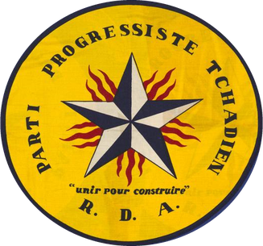
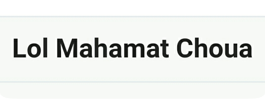
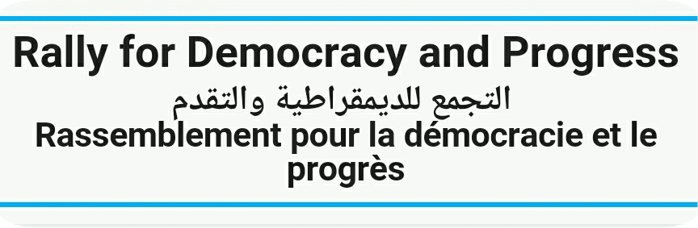

REPUBLIC OF CHAD
"Unity, Work, Progresss"
FIRST PRESIDENT

- François Tombalbaye
- Political Party M.N.R.C.S.; P.P.T.
- In Office From: 11 August 1960.
- In Office until: 13 April 1975.
- Born: 15 June 1918.
- Died: 13 April 1975 [Assassinated]
- Aged: 56 years Old.
Acting President
- Noel Milarew Odingar
- Political Party Military
- In Office From: 13 April 1975.
- In Office Until: 15 April 1975.
- Born: 5 May 1932.
- Died: 29 April 2007.
- Aged: 75 years Old.
SECOND PRESIDENT


- Félix Malloum.
- Political Party Military
- In Office From: 15 April 1975.
- In Office Until: 23 March 1979 [Resigned].
- Born: 10 September 1932.
- Died:12 June 2009.
- Aged:76 years Old.
- Goukouni Oueddei.
- Political Party FROLINAT-FAP
- In Office From: 23 March 1979.
- In Office Until: 29 April 1979.
- Born: ?- ?- 1944.
- Aged: 78-79 years Old.
THIRD PRESIDENT


- Lol Mahamat Choua
- Political Party R.D.P.
- In Office From: 29 April 1979.
- In Office Until: 3 September 1979.
- Born: 15 June 1939.
- Died: 15 September 2019.
- Aged: 80 years Old.
FOURTH PRESIDENT
- Goukouni Oueddei.
- Political Party FROLINAT-FAP
- In Office From: 3 September 1979.
- In Office Until: 7 June 1982 [Deposed]
- Born: ?- ?- 1944.
- Aged: 78-79 years Old.
FIFTH PRESIDENT
- Hissène Habré
- Political Party FROLINAT; UNIR
- In Office From: 7 June 1982.
- In Office Until: 1 December 1990 [Deposed]
- Born: 13 August 1942.
- Died: 24 August 2021.
- Aged: 79 Years Old.
SIXTH PRESIDENT

- ldriss Déby ltno.
- Political Party P.S.M.
- In Office From: 2 December 1990.
- In Office Until: 20 April 2021.
- Born: 18 June 1952.
- Died: 20 April 2021 [Killed in Battle]
- Aged: 68 years Old.

Transitional President [Incumbent]
- Mahamat Idriss Déby ltno
- Political Party U.P.N.D.
- In Office From: 10 October 2022.
- Born: 4 April 1984.
- Aged: 39 years Old.